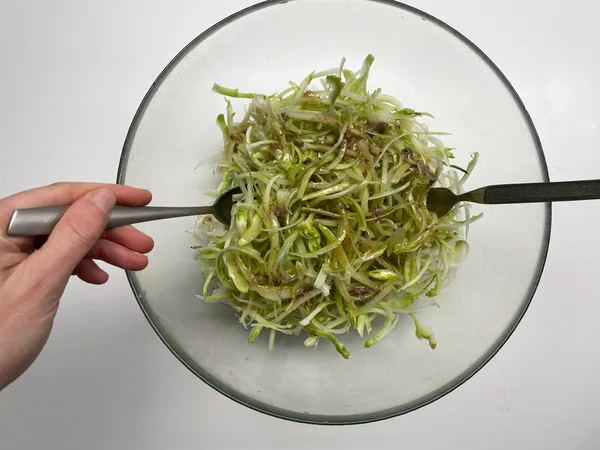

Per preparare l’insalata di puntarelle alla romana, iniziate pulendo accuratamente il cespo di catalogna di circa 1,5/2 kg da cui ricaverete circa 800 g di puntarelle. Fate attenzione che non siano presenti residui di terreno. Eliminate le foglie più dure e fibrose, arrivando man mano ai germogli, ovvero le puntarelle.
Private le puntarelle delle foglioline esterne e poi della base, quindi dividetele a metà .
Dovrete ricavare delle striscioline molto sottili. Potete anche usare uno spelucchino e farlo a mano, senza tagliere, ma ci metterete certamente più tempo. Immergete in acqua e ghiaccio per almeno un’ora le puntarelle, avendo cura di cambiare l’acqua almeno due volte durante questo tempo. Questa operazione servirà a dare l’aspetto arricciato tipico delle puntarelle.
Schiacciate mezzo spicchio d’aglio, togliete la camicia e dividete lo spicchio, quindi schiacciatelo al coltello.
Una volta pronto, quasi ridotto in crema, versatelo in una ciotolina con le alici sott'olio scolate e olio extravergine d'oliva.
Unite anche l'aceto, quindi mescolate per far sciogliere le alici. Emulsionate, poi aggiustate di sale e pepe a piacere.
Mescolate ancora, dovrete ottenere un'emulsione omogenea. Se preferite, potete lasciare anche qualche pezzettino sbriciolato di alice. Scolate le puntarelle, disponetele su un canovaccio asciutto e tamponatele con molta delicatezza. Questa operazione è importante per asciugarle bene senza romperle o schiacciarle eccessivamente.

Versatele in una ciotola grande, irroratele con l'emulsione prima di servire, volendo aggiungete una grattata di pepe. La vostra insalata di puntarelle alla romana è pronta per essere servita come gustoso contorno o come antipasto.